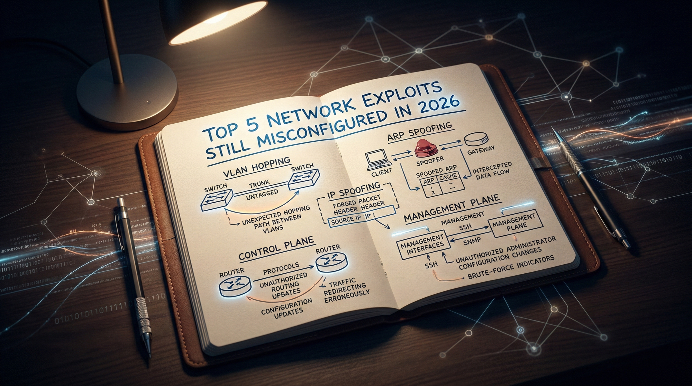

Security & Infrastructure
Top 5 Network Exploits Still Misconfigured in 2026 (With Real-World Examples)

Understanding persistent legacy vulnerabilities in modern network architectures
Why Old Exploits Still Win on Modern Networks
The assumption that modern infrastructure is inherently more secure is one of the most dangerous beliefs in enterprise networking. In 2026, organizations run next-generation firewalls, zero-trust overlays, and AI-driven SIEM platforms - yet the same Layer 2 and Layer 3 misconfigurations that enabled attacks in 2003 continue to succeed.
The reason is structural. Enterprise networks are not rebuilt from scratch. They are accumulated. A campus switch installed during a 2011 refresh still runs DTP on its access ports. A data center spine inherited from a merger still responds to SNMPv1 community strings. A transit router never received the uRPF configuration that was in the design doc but never pushed to production.
Attackers do not need zero-days when default configurations are left in place. This article documents five categories of persistent network misconfiguration that remain exploitable in 2026, explains the attack mechanics precisely, and prescribes defenses at the architecture level.
Executive Summary
Despite significant investment in perimeter and endpoint security, foundational network-layer misconfigurations remain endemic across enterprise, data center, and service provider environments. The five exploit categories documented here - VLAN hopping, ARP/DHCP spoofing, IP spoofing with reflection abuse, control plane exhaustion, and management plane exposure - share a common root cause: protocols designed for trusted environments deployed in untrusted ones without compensating controls.
Each of these attacks is preventable. None require sophisticated tooling to execute. All of them have appeared in post-incident reports from the past 24 months.
1. VLAN Hopping: 802.1Q Double Tagging and DTP Abuse
What It Is
VLAN hopping is a Layer 2 attack that allows a malicious host on one VLAN to send frames into a different VLAN without traversing a Layer 3 routing boundary. Two distinct mechanisms exist: DTP-based trunk negotiation and 802.1Q double tagging.
Why It Still Works in 2026
Cisco's Dynamic Trunking Protocol (DTP) is enabled by default on most IOS and IOS-XE switch ports in
dynamic auto or dynamic desirable mode. An attacker who connects a device that
sends DTP frames can negotiate a trunk link, gaining access to all VLANs traversing that port.
Double-tag attacks do not require DTP at all. They work when the attacker's access port is assigned to the same VLAN as the native VLAN on the upstream trunk. The attacker sends a double-tagged 802.1Q frame: the outer tag matches the native VLAN (stripped by the first switch without adding a tag, since native VLAN traffic is untagged on many configurations), and the inner tag addresses the target VLAN. The second switch forwards the frame into that inner VLAN.
Real-World Scenario
In a 2025 red team engagement at a regional financial institution, a contractor's endpoint on a guest
VLAN was able to reach the core banking application VLAN. The access switch port was left in
switchport mode dynamic desirable. The attacker's laptop sent DTP frames, negotiated a
trunk, and then used VLAN 1 - which was also the native VLAN on every uplink - to execute a double-tag
injection into the production VLAN.
Attack Mechanics
Attacker Frame (double-tagged):
[Outer 802.1Q Tag: VLAN 1 (native)] [Inner 802.1Q Tag: VLAN 100 (target)] [Payload]
Switch A: strips outer tag (native VLAN = untagged), forwards to trunk with inner tag intact
Switch B: reads inner tag VLAN 100, delivers frame to target VLANNote: Double-tag attacks are unidirectional - return traffic cannot reach the attacker without a separate mechanism. However, combined with ARP poisoning or ICMP redirection, bidirectional communication is achievable.
Business Impact
Unauthorized lateral movement between security zones. Bypass of inter-VLAN firewall policies. Access to payment systems, PII databases, or OT networks from untrusted segments.
Detection Methods
- Monitor for DTP frames on access ports (unexpected trunk negotiation events in syslog)
- Alert on 802.1Q frames with double tags ingressing access switchports
- Use NetFlow/IPFIX to detect traffic sourced from unexpected VLANs
Mitigation Best Practices
- Explicitly configure all access ports:
switchport mode access- never leave ports in dynamic mode - Disable DTP on all non-trunk ports:
switchport nonegotiate - Change the native VLAN on all trunks to an unused, unpopulated VLAN ID (e.g., VLAN 999)
- Explicitly prune allowed VLANs on trunk ports to only what is required
- Apply port security or 802.1X authentication on all access ports
Common Misconfiguration Patterns
- Leaving default
dynamic autoon access ports after provisioning - Using VLAN 1 as both the native VLAN and a production access VLAN
- Forgetting to disable DTP on uplinks to servers and hypervisors
2. ARP Spoofing and DHCP Spoofing: Layer 2 Man-in-the-Middle
What It Is
ARP (Address Resolution Protocol) operates without authentication. Any host can send a Gratuitous ARP (GARP) announcing an IP-to-MAC mapping. An attacker uses this to poison the ARP cache of hosts and gateways, redirecting traffic through their interface - a classic man-in-the-middle (MITM) position.
DHCP spoofing involves an attacker standing up a rogue DHCP server that responds to client DISCOVER messages faster than the legitimate server, assigning attacker-controlled gateway and DNS values to victims.
Why It Still Works in 2026
DHCP snooping and Dynamic ARP Inspection (DAI) are well-documented Layer 2 controls available on virtually every managed switch since 2005. Yet they remain disabled on a significant portion of production access layers - particularly in environments that have grown through acquisition or where network engineers prioritize uptime over hardening.
Real-World Scenario
At a mid-sized healthcare provider, an internal threat actor on the radiology VLAN used
arpspoof to poison the ARP cache of a PACS server and the default gateway simultaneously.
All DICOM traffic traversed the attacker's workstation in cleartext. The attack ran undetected for 11
days because the environment had no DAI and DHCP snooping was disabled to avoid "breaking things" after
a previous incident.
Attack Mechanics
- Attacker sends unsolicited ARP reply to the gateway: "IP 10.0.1.50 is at MAC AA:BB:CC:DD:EE:FF"
- Attacker sends unsolicited ARP reply to the victim: "IP 10.0.1.1 (gateway) is at MAC AA:BB:CC:DD:EE:FF"
- Both devices update their ARP tables
- Traffic flows: Victim → Attacker → Gateway (full MITM)
DHCP snooping builds a binding table mapping IP addresses to MAC addresses, switch ports, and VLANs. DAI uses this binding table to validate ARP packets - any ARP that does not match the binding table is dropped. This is why DHCP snooping must be enabled before DAI; DAI depends on the binding table for its decisions.
Business Impact
Credential theft, session hijacking, SSL stripping attacks, traffic exfiltration, lateral movement facilitation. In healthcare and finance, direct regulatory exposure (HIPAA, PCI-DSS).
Mitigation Best Practices
- Enable DHCP snooping on all VLANs: mark only uplink ports toward legitimate DHCP servers as trusted
- Enable DAI using the DHCP snooping binding table as its validation source
- Configure ARP inspection rate limiting to prevent DAI bypass via flood
- Use static ARP entries for critical infrastructure (gateways, DNS servers) where operationally feasible
- Consider 802.1X with per-user VLAN assignment to limit blast radius
3. IP Spoofing and Reflection/Amplification Abuse
What It Is
IP spoofing involves crafting packets with a falsified source IP address. At scale, spoofed packets are used to launch reflection attacks - the attacker sends requests to third-party services (DNS, NTP, memcached, SSDP) with a victim's IP as the source. The reflector replies to the victim, amplifying the attack by the protocol's amplification factor (DNS: ~30x, NTP: up to 556x, memcached: up to 50,000x).
Why It Still Works in 2026
BCP38 (Network Ingress Filtering, RFC 2827) has been an industry best practice since 2000. It requires ISPs and network operators to drop packets from customer networks where the source address does not belong to the customer's allocated prefix. Despite decades of advocacy, CAIDA's Spoofer project consistently reports that 25–30% of autonomous systems do not implement anti-spoofing filtering.
Within enterprises, Unicast Reverse Path Forwarding (uRPF) is the primary mechanism - and it is frequently misconfigured or absent.
Real-World Scenario
An ISP in Southeast Asia operating without BCP38 on its customer-facing access layer was used as a launch platform in a 2024 memcached amplification attack that peaked at 480 Gbps, targeting a financial exchange. Forensic analysis confirmed that spoofed UDP/11211 packets originated from the ISP's customer CIDR blocks with no egress filtering in place.
Attack Mechanics
uRPF Strict Mode: The router checks whether the source IP of an incoming packet is reachable via the interface the packet arrived on. If the routing table does not contain a route to that source prefix pointing back to the ingress interface, the packet is dropped.
uRPF Loose Mode: The router only checks that the source IP has any valid route in the routing table, regardless of which interface. Loose mode is used in asymmetric routing environments where strict mode would drop legitimate traffic but still prevents fully bogus (unroutable) source addresses.
BCP38 is the operational policy that mandates ISPs apply strict ingress filtering at customer-facing interfaces - preventing customers from injecting spoofed source addresses into the transit network.
Mitigation Best Practices
- Implement uRPF strict mode on all single-homed customer and access interfaces
- Apply uRPF loose mode on multi-homed or asymmetric routing interfaces where strict mode is not feasible
- Implement BCP38 ingress filtering at all customer-facing edges and document it in your NOC runbooks
- Use prefix lists or IRR-validated route filters to prevent route leaks that would confuse uRPF
- Rate-limit and consider response-rate limiting (RRL) on authoritative DNS servers to reduce reflection utility
4. Control Plane Exhaustion: Broadcast Storms, TCAM Overflow, and CoPP
What It Is
The control plane of a network device handles routing protocol updates, management traffic, ARP processing, and exception traffic that requires CPU intervention. Unlike the hardware forwarding (data) plane, the control plane runs on the device's CPU and has limited processing capacity. Exhausting it causes routing adjacencies to drop, management access to fail, and traffic forwarding to degrade or halt.
Control Plane Policing (CoPP) is the mechanism used to rate-limit traffic destined to the route processor, protecting it from both accidental flooding and deliberate denial-of-service.
Why It Still Works in 2026
CoPP requires explicit configuration. On many platforms, it ships disabled or with permissive default policies. Additionally, TCAM (Ternary Content Addressable Memory) - the hardware table used for forwarding lookups - is finite. An attacker who can introduce a large number of unique source MAC addresses (MAC flooding) or exhaust route table entries can force a switch into CPU-based forwarding mode, dramatically degrading throughput and exposing the control plane.
Spanning Tree Protocol (STP) misconfiguration remains a reliable trigger for broadcast storms: an attacker who connects a switch with a lower bridge priority can become the root bridge, reshaping the Layer 2 topology and creating forwarding loops if BPDU Guard is not configured.
Mitigation Best Practices
- Configure CoPP with explicit class maps for each traffic type (BGP, OSPF, ICMP, management, ARP) with appropriate rate limits
- Enable BPDU Guard on all access ports; enable Root Guard on designated root ports
- Enable port security or 802.1X to limit MAC address learning per port
- Configure
maximum-routeslimits on BGP peers and routing protocol neighbor filters - Implement hardware rate-limiting for ARP and ICMP at the access layer
- Separate the management plane using a dedicated Out-of-Band (OOB) network so control plane exhaustion does not lock out management access
5. Management Plane Exposure: Telnet, SNMPv1/v2c, and Weak SSH
What It Is
The management plane encompasses all protocols and interfaces used to configure, monitor, and maintain network devices: SSH, Telnet, SNMP, NETCONF, REST APIs, and web interfaces. Exposing these with weak authentication, unencrypted protocols, or broad access controls is one of the most impactful - and most common - misconfigurations in enterprise networks.
Why It Still Works in 2026
Legacy automation scripts rely on SNMPv2c community strings. Change management processes prohibit SSH version upgrades on production devices. Telnet remains enabled on out-of-band console servers never included in hardening audits. Network management systems (NMS) require SNMPv1 write access for legacy MIB polling.
SNMPv3 authPriv vs authNoPriv
- noAuthNoPriv: No authentication, no encryption. Functionally equivalent to SNMPv1/v2c in terms of security.
- authNoPriv: HMAC-MD5 or HMAC-SHA authentication, but traffic is transmitted in cleartext. Prevents spoofing but not data snooping.
- authPriv: Authentication plus encryption (AES-128 or AES-256). The only mode that provides both integrity and confidentiality. Required for production infrastructure.
Attack Mechanics
- Attacker scans management VLAN or OOB network for UDP/161 responses
- Brute-forces or guesses community strings (
public,private,network,cisco, hostname-based strings) - Executes SNMP walk to enumerate full device configuration and network topology
- Uses topology data to identify high-value targets and pivot paths
- If SNMPv2c write access (
privatecommunity) is enabled, attacker can modify routing tables or shut down interfaces
Mitigation Best Practices
- Disable Telnet globally on all managed devices; enforce SSH v2 only
- Migrate all SNMP monitoring to SNMPv3 authPriv with AES-256; disable SNMPv1/v2c
- Apply ACLs to all management protocols restricting source access to NMS and jump host IP ranges
- Configure SSH with strong KEX algorithms only (curve25519, diffie-hellman-group14 or higher); disable legacy ciphers and MACs
- Use role-based access control (RBAC) via TACACS+ to enforce least privilege for network device access
- Implement out-of-band management with physical or logical separation from production traffic paths
- Rotate all SNMP community strings and SSH keys on a defined schedule as part of credential lifecycle management
Exploit Comparison Table
| Exploit | Layer Affected | Root Cause | Business Impact | Primary Defense |
|---|---|---|---|---|
| VLAN Hopping | Layer 2 | DTP enabled; native VLAN overlap | Unauthorized zone traversal | Disable DTP; change native VLAN |
| ARP / DHCP Spoofing | Layer 2 | No binding table validation | MITM, credential theft | DHCP Snooping + DAI |
| IP Spoofing / Reflection | Layer 3 | No uRPF or BCP38 enforcement | DDoS amplification, abuse | uRPF strict/loose + BCP38 |
| Control Plane Exhaustion | Layer 2–3 | No CoPP; no STP protection | Routing failure, outage | CoPP + BPDU Guard + Port Security |
| Management Plane Exposure | Layer 7 (Mgmt) | Weak protocols, default credentials | Full device compromise | SNMPv3 authPriv + SSH v2 + ACLs |
Frequently Asked Questions
What is VLAN hopping?
VLAN hopping is a Layer 2 attack where an attacker sends traffic into a VLAN they are not authorized to access. It exploits either DTP trunk negotiation (the attacker tricks a switch into forming a trunk) or 802.1Q double tagging (the attacker embeds two VLAN tags so the outer tag is stripped by the first switch, delivering the frame to a target VLAN via the inner tag). The primary defenses are disabling DTP and isolating the native VLAN.
How does ARP spoofing work?
ARP spoofing works by sending unsolicited ARP reply messages that map a legitimate IP address to the attacker's MAC address. Neighboring hosts and gateways update their ARP caches with the false mapping. Subsequent traffic destined for that IP is forwarded to the attacker instead. Dynamic ARP Inspection (DAI), backed by a DHCP snooping binding table, validates ARP mappings and drops spoofed responses before they reach hosts.
What is CoPP in networking?
Control Plane Policing (CoPP) is a quality-of-service mechanism applied to traffic destined for a router or switch's route processor (CPU). It uses policy maps to rate-limit or drop specific traffic classes - such as ICMP, BGP, ARP, or management protocols - preventing the control plane from being overwhelmed by floods or deliberate denial-of-service attacks. Unlike hardware forwarding, the control plane has limited CPU capacity and must be explicitly protected.
Why is SNMPv2 insecure?
SNMPv2c uses community strings for authentication - essentially shared passwords transmitted in plaintext over UDP. Anyone who can capture management traffic or guess the community string gains full read (and potentially write) access to device configuration and routing data. SNMPv2c provides no encryption and no per-message authentication integrity. SNMPv3 with authPriv mode (authentication plus AES encryption) is the only SNMP version suitable for production use.
How does IP spoofing bypass filtering?
IP spoofing bypasses filtering when network operators fail to implement ingress filtering (BCP38/RFC 2827) or uRPF on edge and access interfaces. Without these controls, a router accepts packets regardless of whether the source IP address could legitimately originate from the interface it arrived on. The packet enters the network with a falsified source, is forwarded normally, and the response is directed to the spoofed victim address - enabling reflection amplification attacks without exposing the real attacker.
Key Takeaways
- None of these attacks require sophisticated tooling. Default configurations and absent controls do the attacker's work.
- Layer 2 security is not optional in zero-trust architectures. Micro-segmentation at Layer 3 does not compensate for an unprotected access layer.
- Protocol age does not imply protocol safety. SNMP, ARP, and DHCP were designed for trusted environments. They require explicit compensating controls in any modern deployment.
- CoPP is as important as ACLs. Protecting the control plane is not a tuning exercise - it is a foundational hardening requirement.
- uRPF and BCP38 are a shared responsibility. Service providers and enterprises both have an obligation to implement anti-spoofing controls. Failure at either layer enables amplification infrastructure abuse.
Enterprise Network Hardening Checklist
Layer 2 Access Layer
- All access ports explicitly configured as
switchport mode access - DTP disabled (
switchport nonegotiate) on all non-trunk ports - Native VLAN changed from VLAN 1 to an unused, unpopulated VLAN on all trunks
- DHCP snooping enabled on all access VLANs with only uplink ports marked trusted
- DAI (Dynamic ARP Inspection) enabled, referencing the DHCP snooping binding table
- BPDU Guard enabled on all access ports; Root Guard on designated root-facing ports
- Port security or 802.1X deployed on all access switchports
Layer 3 and Routing
- uRPF strict mode enabled on all single-homed interfaces
- uRPF loose mode applied to multi-homed/asymmetric routing interfaces
- BCP38 ingress filtering applied at all customer-facing and access-layer edges
- BGP maximum-prefix limits configured on all peers
- RTBH / flowspec capability provisioned for DDoS response
Control Plane
- CoPP policy configured with explicit class maps for all expected protocol types
- CoPP drop counters monitored via SNMP or streaming telemetry
- CAM table utilization monitored; MAC flooding mitigation in place
Management Plane
- Telnet disabled globally on all managed devices
- SSH v2 explicitly enforced; legacy KEX algorithms and ciphers disabled
- SNMPv1 and SNMPv2c disabled; SNMPv3 authPriv with AES-256 enforced
- SNMP and management protocol access restricted to NMS/jump host IPs via ACL
- TACACS+ or RADIUS with RBAC deployed for all device authentication and authorization
- Out-of-band management network implemented and separated from production
Conclusion: Adopt a Layered Defense Mindset
Security products do not substitute for correctly configured infrastructure. A next-generation firewall between VLANs is meaningless if VLAN hopping allows an attacker to bypass it at Layer 2. An intrusion detection system cannot alert on spoofed-source reflection attacks that never pass through its inspection path.
The exploits documented here persist not because defenders lack knowledge, but because operational pressure, technical debt, and incomplete hardening programs leave the gap between design intent and running configuration permanently open.
Close that gap systematically. Treat your network configuration as code. Validate it with automated compliance scanning. Audit it after every change window. The infrastructure that carries your organization's most sensitive data deserves the same rigor as the applications running on top of it.
The most dangerous misconfiguration is the one you assumed someone else already fixed.
Disclaimer: This article is intended for educational and defensive purposes only. Please do not apply or test these techniques on systems or networks without explicit authorization. Article prepared for network engineers, security architects, and infrastructure practitioners. Technical accuracy verified against Cisco IOS/IOS-XE, Juniper JunOS, and vendor-neutral RFC documentation current as of Q1 2026.